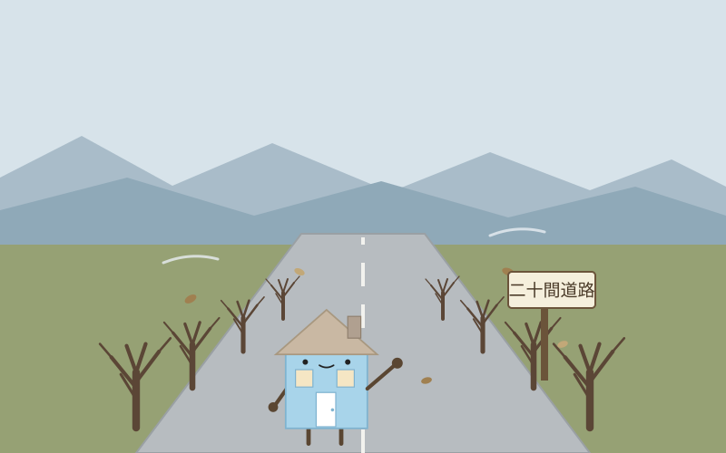
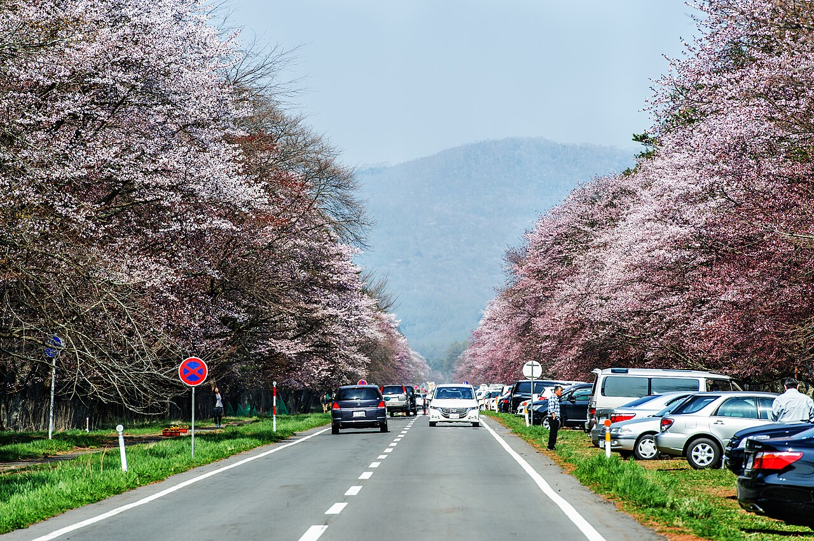

Day 15：新ひだか町

二十間道路に立った。11月の道には、花がなかった。幅36メートル、まっすぐな道の両側に、葉を落とした桜の木が並んでいる。枝だけになった木の間を、冷たい風が抜けていく音がした。遠くに日高の山が見える。道は7キロ先までまっすぐで、その先は霞んでいた。道の真ん中に立つと、両側の木が同じ高さで並び、まるで家の柱のようだった。屋根のない、長い家のような道だ。
ここへはむかわ町から来た。鵡川駅前14時14分発の静内行きのバスで、約84分、国道235号を東へ走る。車窓には牧場の柵が続き、ときどき馬の姿が見えた気がした。門別、新冠を過ぎると、道沿いの牧場がますます増えていく。バスは、2021年に廃止された日高本線の代わりをしている。列車の来なくなった駅の前を、バスが静かに通り過ぎた。
この道は1903年、静内の市街と新冠の御料牧場を結ぶ道としてつくられた。皇族が牧場を視察に来るときの行啓道路でもあった。幅が二十間、約36メートルあることから二十間道路と呼ばれる。桜は1916年から1918年にかけて、牧場の職員たちが近くの山から移植したものだという。今ある桜は2,122本。その7割がエゾヤマザクラで、5月の初めに一斉に咲く。日本の道100選、さくら名所100選、北海道遺産にも選ばれている。花の時期には、全国から約20万人がこの道を訪れるという。

静内は馬の町でもある。日高地方は国内の競走馬の約7割を育てるといわれる産地で、新ひだか町は全国一の軽種馬産地ともいわれる。町の木もエゾヤマザクラだ。2006年に静内町と三石町が合併して生まれたこの町で、桜と馬が、町の顔になっている。
私は家だ。家もまた、季節を待つ。桜の季節ではない11月に来てしまったのは、早まったのか、遅れたのか。けれど、花のない並木を見て思った。桜は毎年、同じ道へ帰ってくる。住む人が毎晩、同じ玄関へ帰ってくるように。道は、桜のための家なのだ。花がないからこそ、道の幅とまっすぐさがよく分かった。春には花に隠れてしまう、道そのものの姿だ。列車は来なくなっても、道はまっすぐ残っている。
枯れた枝の先に、来年の花を想像しながら帰ることにした。11月の道を見た家として、それで十分だと思った。
出典：Wikipedia「二十間道路桜並木」「新ひだか町」、まっぷるウェブ「新冠・静内観光ならここ！」、NAVITIME「鵡川中学校前から鵡川駅前 バス時刻表（苫小牧駅前→静内）」・Moovit「静内～鵡川 バスタイムスケジュールと路線図」（2026-11-15）、福沢康弘「新ひだか町における地域経済の現状把握と産業遺産としての二十間道路に関する論点整理」（『開発論集』第102号、2018年）。
💬 コメント